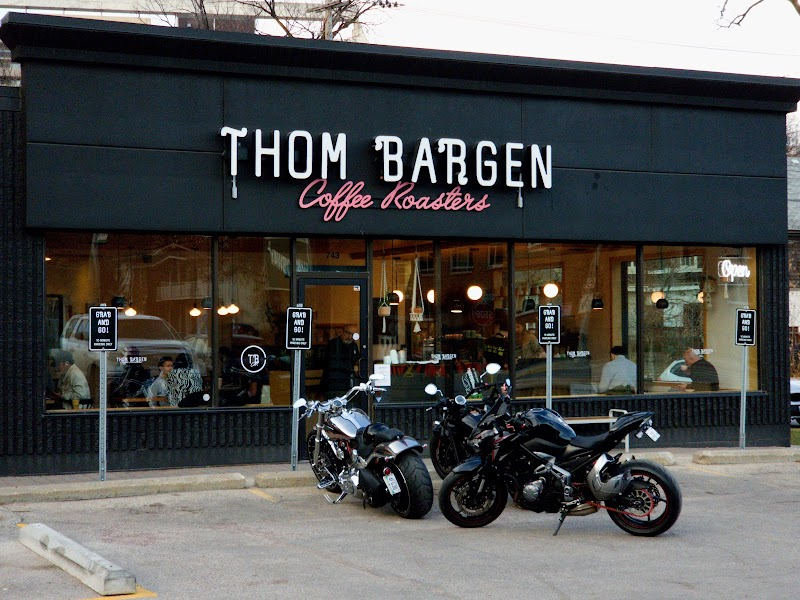

Cozy winter warm-up spots near the Corydon Airbnb

Winnipeg winters get genuinely cold, and the best defence isn't just layering up — it's knowing where to duck in and warm back up. Everything below is on Corydon Avenue itself, a short walk from the Corydon/Crescentwood Airbnb, so a cold-weather stop never turns into a long detour.
Thom Bargen Coffee Roasters
Thom Bargen Coffee Roasters at 743 Corydon Ave roasts its own beans and runs a proper espresso bar, making it the strip's dedicated destination coffee shop. On a cold day it's an easy first stop: a hot espresso drink, a warm room, and a chance to plan the rest of your walk before heading back out.
Saperavi Georgian Cuisine
Saperavi Georgian Cuisine at 709 Corydon Ave is the Prairies' first Georgian restaurant, and its menu leans naturally into cold-weather comfort — khinkali (soup dumplings), khachapuri (cheese-filled bread), and hearty shashlik, alongside Georgian wine. It's a sit-down option for when you want a full warm meal rather than a quick stop.
Sugar + Salt Bakeshoppe
Sugar + Salt Bakeshoppe at 897 Corydon Ave is a bakery and custom cake shop that also pours a well-regarded coffee, so it doubles as a warm-up stop with something sweet on the side. It keeps shorter, more limited hours than the restaurants nearby, so it's worth checking current hours before making it your destination.
Good to know: All three stops are on Corydon Avenue, within easy walking distance of the Corydon/Crescentwood Airbnb — useful in winter, when you want to minimize time outdoors between stops. Dress for the walk between them (wind along Corydon can make it feel colder than the forecast), and check current hours ahead of time since winter hours can run shorter than summer ones.